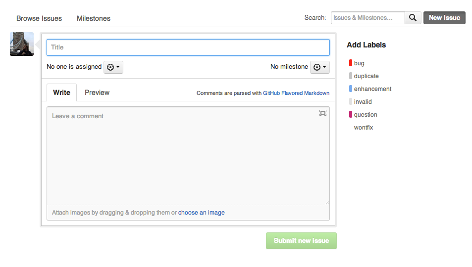
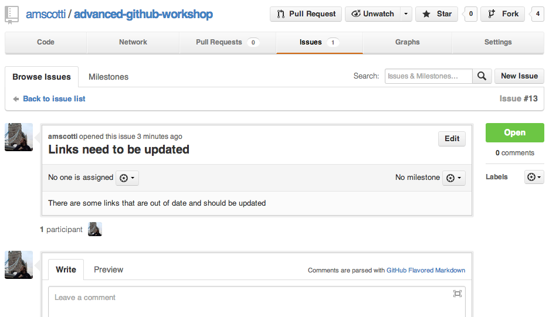
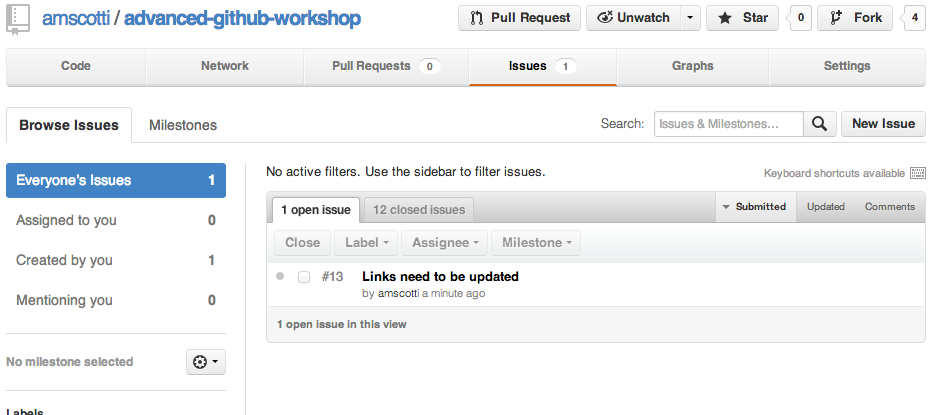
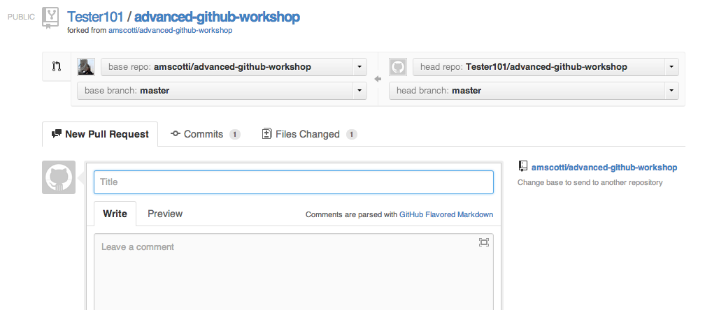
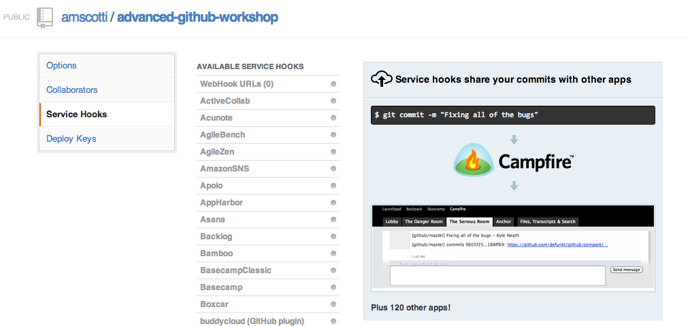

Advanced GitHub
Workshop?!
Created by Anthony Scotti / @amscotti
Why?
- Github is so much more then just a Git Repo
- Full projects can be managed from GitHub
- GitHub was built around social
Things!
We'll be going over:
We have issues

What are Issues?
- Issues Tracking
- Discussions
- Feature requests
- Work logs
- Documentation
LET'S MAKE A new issue!
Step Zero
Go into the advance-github-workshop repo on GitHub
Step One
Click on the Issues button
Step Two
Click on the New Issue button
Step Three
Fill Out and Submit the Issue
Issue can be...
- Commented on
- Have code added
- Closed
Tug-O-War with Pull Requests

What are Pull Requests?
- Type of issues
- Unit of work
- Work logs
- Documentation
How are Pull Request Used?
A pull request can be made from a fork of the repository or from a branch from within the repository
When you want your code to be merged into the main repository or another branch in the repository you would make a new pull request
LET'S MAKE A new Pull Request!
Step Zero
Go into the advance-github-workshop repo on GitHub
Step One
Click on the Fork Button

Step Two
Click on the Fork to {Your User Name} Button
Hardcore Forking Action
Step Three
Update the code
Step Four
Click Pull Request
Step Five
Send the pull request

Pull request can be...
- Commented on
- Have code added
- Closed
- Merged
- Assigned to Tony

GitHub Flavored Markdown

What is Markdown?
## This is Markdown
Markdown is kind of a short hand for making HTML
* There are many places where Markdown is used
* GitHub has added to what you can do with Markdown
* [GitHub's Markdown Site](https://help.github.com/articles/github-flavored-markdown)
Markdown on GitHub gives you
- Syntax highlighting
- Task Lists
- Name and Team @mentions autocomplete
- Issue autocompletion
Why use Markdown on GitHub?
- Better format for Issues/Pull Request/Commits
- Nicer Documentation
- Able to link to Issues/Pull Request/Commits
Learn it...Now!

Piling on Pages with GitHub Pages

What are GitHub Pages?
How to use GitHub Pages?
- Setup the Repo for the pages
- Project repo, make a gh-page branch in the repo
- User/Organizations, make a new project called {Name}.github.com
- Wait for Github to build the site
- Site URL format will be
- Project -> {name}.github.com/{Project Name}
- User/Organizations -> {name}.github.com
Jekyll on GitHub Pages
Jekyll can help build a site or a blog from Markdown files
- Setup a Jekyll Project
- Push to GitHub
- Wait for Github to build the site
More info on GitHub's Using Jekyll With Page
GitHub Pages Example
Your looking at one! ;)
Getting Hooked with GitHub Service Hooks

*Service Hooks are not a villain!
What are GitHub Service Hooks?
(and what can they do?)
- Used to setup integrations with other services
- Can trigger builds in a CI system
- Can add a task into a tracking service
- Can post a message into chat services
- Can send WebHook data to an Arduino, which then will sound the alarm of another great commit that has been pushed to GitHub!

Let's see how to setup a GitHub Service Hook!
Step Zero
Go into your fork of advance-github-workshop repo on GitHub
Step One
Click the Settings Button
Step Two
Click the Service Hooks button and pick your poison!
The GitHub Client

What is the GitHub Client?

What can the GitHub Client help you with?
- Clone repos to you local system
- Keep all your local repo in sync with GitHub
- View commit logs with code changes
- Make new branches
- Commit changes and sync with GitHub
- Notifications when others update the repo
Where do I get the GitHub Client?
- Mac -> mac.github.com
- Windows -> windows.github.com
- Linux -> None yet, you're too hardcore to need one! ;)
GitHub Resources
- GitHub's Learn page at learn.github.com
- Code School's tryGit at try.github.com
- GitHub help pages at help.github.com
- GitHub Flow by Scott Chacon
How Github Uses Github to Build Github
I looked this up in the dictionary and the dictionary definition was 'you can do shit without needing to pull me out of the zone'. I read really edgy dictionaries.Zach Holman
THE END